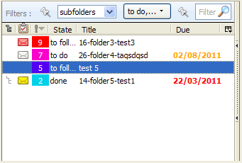
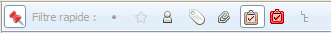

Algemene beschrijving
Deze extensie maakt het mogelijk taken te beheren en deze aan emails te linken.
De extensie werkt met Thunderbird 3.1.
Wat is een taak?
Een taak heeft:
- een titel, een beschrijving
- een status
- doen: taak die door de gebruiker zelf moet worden uitgevoerd
- volgen: een taak die is gedelegeerd. Deze moet worden gevolgd
- wachten: een taak die is gedelegeerd of geblokkeerd. Deze hoeft eigenlijk niet te worden gevolgd
- klaar
- info: log information,
- een prioriteit
- van 0 (laag/groen) tot 9 (hoog/rood) en alles daartussen (zoals 5 / blauw)
- links (0 tot n) met emails
- een folder
- een aantal data:
- aangemaakt
- streefdatum
- afgewerkt
Wanneer een taak niet is gelinkt aan een email, is de taak in ieder geval gelinkt aan een email folder.
Interface
De takenlijst bestaat uit de taken van de huidige folder (en sub-folders). De lijst wordt bij elke wijziging van de huidige folders aangepast. De takenlijst omvat:- een icoon (
 ) dat aangeeft
wanneer de taak zich in een sub-folder bevindt
) dat aangeeft
wanneer de taak zich in een sub-folder bevindt - een icoon (
 ,
, , ,,) dat aangeeft of de taak is
gelinkt. Het icoon is rood als de taak is gelinkt aan de
huidige email.
, ,,) dat aangeeft of de taak is
gelinkt. Het icoon is rood als de taak is gelinkt aan de
huidige email. - de status van de taak
- de prioriteit van de taak (waarde en kleur)
- de titel van de taak
- de aanmaakdatum
- de streefdatum
- de afwerkdatum
- (de naam van de folder is zichtbaar in de vorm van een tooltip)
De lijst kan worden gesorteerd door op een van de kolom-koppen te klikken. Er kan slechts één kolom tegelijk gesorteerd zijn.
De te sorteren kolommen zijn:
- Prioriteit
- Status
- Aangemaakt
- Streefdatum
- Afgewerkt
Onder de takenlijst bevindt zich een toolbar met een systeem om de taken te filteren op status en folders.
De lijst met emails bevat een icoon dat aangeeft of de email gelinkt is met een taak.
Het snel-filter maakt het mogelijk om de emails met gelinkte taken te filteren.
De kleur van de kolom "streefdatum" wijzigt indien de streefdatum al voorbij is (rood) of in de komende zeven dagen ligt (oranje).
Taak activiteiten
Een taak maken
Om een taak te maken: gebruik menu 'File
/ New / Taak', vul de details in en klik op 'Opslaan'. De taak is nu verbonden met de
huidige folder.
Het is mogelijk een taak te maken die onmiddellijk wordt
gelinkt aan de geselecteerde email ('Shift-N').
Dit maakt het detail van de taak zichtbaar indien nodig.
Een taak bekijken of wijzigen
Om een taak te bekijken of wijzigen: gebruik menu 'Edit / Taak bijwerken' of dubbelklik (zonder opslaan). Als het
detail-aanzicht al open is, dubbelklik
om het detail-aanzicht te sluiten.
In het detail aanzicht: 'Enter' en
'Ctrl-Enter' in het beschrijving-veld slaan de wijzigingen op.
'Shift-Escape' verlaat het scherm zonder op te slaan.
Een taak verwijderen
Om een taak te verwijderen: selecteer een of meerdere taken, daarna met menu 'Edit / Taak verwijderen' van de takenlijst verwijderen. Het verwijderen van een taak, zelfs als deze is gelinkt aan een taak, zal niet leiden tot het verwijderen van een email.
Taak status
Een taak heeft een status (doen, volgen, wachten, klaar).
Een status wijzigen: selecteer de taak, gebruik menu 'Edit / Taak bijwerken', pas de
status aan en klik op 'Opslaan'.
Een taak markeren als 'klaar': gebruik menu 'Tasks & Mails / Markeer als klaar' (Shift-D).
Statussen kunnen worden aangepast, zie Voorkeuren.
Prioriteit
Een taak heeft een prioriteit: 0 (laag) tot 9 (hoog).
Een prioriteit wijzigen: ga naar het taak-detail scherm, gebruik
menu 'Tasks & Mails / Wijzig prioriteit'.
Prioriteiten kunnen ook worden verhoogd of verlaagd door middel
van menu 'Tasks & Mails / Wijzig prioriteit
/ Verhogen Verlagen' of 'Ctrl-Alt Page_Up' en 'Ctrl-Alt Page_Down'.
De takenlijst kan worden gesorteerd op prioriteit. Zie Interface
Taak data
De datum van aanmaak wordt automatisch gegenereerd en kan niet worden aangepast.Plaats een vink in het vakje om een van de data in te stellen. Haal het vinkje weg om een datum te verwijderen.
Wanneer de status wordt aangepast naar 'klaar', wordt de datum van afwerken automatisch ingesteld.
Wanneer de datum van afwerken wordt ingevoerd, wordt automatisch de status naar 'klaar' aangepast.
Het gebruik van het menu 'Tasks & Mails / Markeer als klaar' past ook automatisch de datum van afwerken aan.
In de takenlijst verandert de kleur van de streefdatum als deze al voorbij is (rood) of in de komende zeven dag ligt (oranje).
Links
Links maken
Je kunt een link maken tussen taken en emails door de gewenste
emails te selecteren, en daarna via menu
'Tasks & Mails / Link taken en berichten'. Het is
mogelijk om een email te linken met een taak van een
sub-folder.
Het is niet mogelijk om meerdere mails aan meerdere taken te
linken (alleen één op N of N op één).
Een link maken met drag and drop: Je kunt met drag and drop
een (of meerdere) email(s) op een taak slepen of een (of meerdere) taken op een email.
Het link icoon
In de takenlijst (en emails), geeft een icoon (, ,,, ) aan dat er minstens
één link bestaat. Als het icoon rood is, betekent dat de
taak is gelinkt aan de huidige email.
Wanneer je een taak (of email) selecteert, en het icoon van de gelinkte
email (of taak) wordt rood, kun je deze sneller bekijken.
Als er geen icoon zichtbaar is, betekent dat dat er geen link bestaat
met de taak of email. Wanneer het icoon grijs is, betekent dat de mail
is gelinkt met een onzichtbare taak.
Links browsen
Vanuit een taak (of email) kunnen we langs alle gelinkte emails (en
taken) browsen. Vanaf een geselecteerde taak (of email), gebruik
menu 'Go / Ga naar volgende email/taak' of Shift-L
om de gerelateerde emails (of taken) te laten zien.
Herhaal dit om naar de volgende email te gaan. Ctrl-dubbelklik op een gelinkte taak
om de email te zien. Het aantal gelinkte objecten wordt
aangegeven tussen haakjes in het context menu.
Wanneer de taak zich in een sub-folder bevindt, wordt de huidige
folder aangepast indien nodig.
Link verbreken
Om links te verbreken: selecteer de taken en emails waarvan de link moet worden verbroken, en gebruik menu 'Tasks & Mails / Verbreek link'.
Alle gelinkte emails selecteren
Om alle gelinkte emails te selecteren: selecteer een taak en
gebruik menu 'Edit / Select / Selecteer gelinkte taken of berichten'. Je kunt meer dan één taak
tegelijk selecteren.
Op dezelfde wijze kun je ook alle taken selecteren die gelinkt zijn aan één of meerdere emails.
Diversen
Het verwijderen van een email veroorzaakt het verwijderen van alle gelinkte taken.
Filters
 De
takenlijst filteren: taken kunnen wel of niet zichtbaar zijn in de
takenlijst, afhankelijk van hun status en/of folder. De takenlijst
kan laten zien:
De
takenlijst filteren: taken kunnen wel of niet zichtbaar zijn in de
takenlijst, afhankelijk van hun status en/of folder. De takenlijst
kan laten zien:
- de taken van de huidige folder
- de taken van de huidige folder en subfolders
- alleen de taken die aan de huidige email zijn gelinkt (de lijst wordt steeds aangepast afhankelijk van de geselecteerde email)
- de taken van alle folders
De filter knop bevat de eerste geselecteerde status gevolgd door '...' wanneer er meerdere statussen zijn geselecteerd. Wanneer alle statussen zijn geselecteerd laat de knop 'All' zien.
Quick filter bar
Je kunt de email's filteren zodat:- alleen emails met tenminst één link met een taak worden getoond
- alleen de emails die zijn gelinkt met de huidige taak worden getoond In deze modus (wanneer er geen taak is geslecteerd) worden alle berichten die een link hebben naar een taak getoond. De email lijst wordt ververst zodra een taak wordt geselecteerd.
- het mogelijk is te schakelen tussen het bekijken van losse emails of aan elkaar verbonden (threads) van emails.
Taken en emails verplaatsen of verwijderen
Voor het verplaatsen van een taak naar een andere folder:
gebruik menu 'Tasks & Mails / Verplaats naar ... '
of drag and drop de taak.
Bij het verplaatsen van een email waar een of meerdere taken aan
zijn gelinkt, worden de taken ook verplaatst; De email blijft gelinkt
aan de taken. Een email verwijderen veroorzaakt het
verwijderen van de gelinkte taken. Als de taak in de Trash
wordt geplaatst, zullen ook de gelinkte taken in de Trash
terecht komen.
Bij het verplaatsen van een folder blijven de links tussen taken
en emails bestaan.
Het verwijderen van
een folder veroorzaakt cascade verwijderen de gelinkte taken.
Hernoemen van een folder heeft geen invloed op taken.
Risicos en problemen
Wanneer je probeert een email te verplaatsen die is gelinkt aan
meerdere taken, die op zichzelf weer zijn gelinkt aan
andere emails, zullen de links verloren gaan.
Een bericht waarschuwt de gebruiker hiervoor. De gebruiker kan
dan besluiten de verplaatsing te annuleren.
Als hij dat niet doet, raakt ook de tweede email zijn taak kwijt
omdat de taak is verplaatst door de eerste email te verplaatsen.
Het is onmogelijk een taak te verplaatsen die is gelinkt met
meer dan een email. Een bericht met een waarschuwing zal worden
getoond wanneer deze verplaatsing wordt gevraagd..
Voorkeuren
De lijst van statussen en de taak-rapportage kunnen wroden
aangepast door de gebruiker via 'Opties'.
De volgorde van de statussen wordt aangepast.
NB: Bij het verwijderen van een status wordt niet gecontroleerd
of die status in gebruik is !!!!!
Het is onmogelijk de status 'klaar' te verwijderen. 'Klaar' kan
wel worden hernoemd, maar dient zijn betekenis te houden.
Taak rapportage
De taak rapportage genereert een email met alle taken die bij
de gestelde filter-voorwaarden en actieve sorteer-methode geldig
zijn.
De rapportage kan worden aangepast in de 'Opties'.
De template is gebaseerd op the aangegeven HTML bronwaarden
waarin sleutelwoorden worden vervangen door waarden.
De template wordt samengesteld vanuit de volgende informatie:
- #TASK_TITLE#, #TASK_PRIO#, #TASK_STATE# en #TASK_DESC# worden vervangen door de informatie van een taak,
- #FOLDER_NAME# wordt vervangen door de naam van de folder van de taak.
- #FOLDER# definiëert een folder. Een folder bestaat uit taken en subfolders. (begin en eind als in XHTML)
- #TASK# bepaalde folder. (begin en eind als in XHTML)
- #SUB_FOLDERS# zijn sub-folders.
Week Rapportage
#FOLDER#
<ul>
<li>#FOLDER_NAME#</ li>
<ul>
#TASK#<li>
#TASK_TITLE#(<tt>#TASK_PRIO#</tt>)<b>#TASK_STATE#</b><i>
#TASK_DESC# #TASK_PRIO#</i>
</li>#TASK#
#SUB_FOLDERS#
</ul>
</ul>
#FOLDER#
Een ander voorbeeld van een template met alle taken op één niveau:
Week Rapportage
<ul>
#FOLDER#
#TASK#<li>
#TASK_TITLE#(<tt>#TASK_PRIO#</tt>)#TASK_STATE#
#TASK_DESC#
</li>#TASK#
#SUB_FOLDERS#
#FOLDER#
</ul>
Backup
De taken zijn opgeslagen in een sqlite database. Deze heeft
database name 'tasks.sqlite' en is aanwezig op de computer in
dedirectory 'thunderbird.user.home' (Windows, C: \ Documents and
Settings \ xxx \ Application Data \ Thunderbird \ Profiles \
1ruyypmm.default\).
Tijdens een extensie-upgrade, wanneer een database's upgrade
moet worden uitgevoerd, wordt automatisch een backup uitgevoerd
in de 'user.home' directory.
Een database backup kan worden utigevoerd met MozBackup versie
1.4.8.